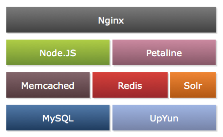

Your browser doesn't support the features required by impress.js, so you are presented with a simplified version of this presentation.
For the best experience please use the latest Chrome, Safari or Firefox browser.
Node.js
在花瓣网的应用
花瓣网介绍
兴趣图谱
2011.11.11正式上线
百万用户，千万PV
Let's build it
Node.JS of course
Why not PHP?
不喜欢这个语言
需要调用大量外部服务
不适合写长时间运行的任务
Why Node.JS?
- JavaScript Language
- V8 engine
- Non-blocking IO
- Express/Connect/jade/socket.io
- 我们都是前端工程师
Web 框架
Express
大量中间件
模板引擎
Jade
同时支持
浏览器端渲染
服务器端渲染
坑
Jade 模板引擎使用 with 语句
var user = { name: 'foo' };
with (user) {
var name = 'bar';
}
console.log(user.name);
解决办法
不使用 with 语句
Jade each 语句
生成的代码太长
解决办法
去掉用不到的
花瓣
App Server
实现
= Modules + Services
Faster than C ?
A story
关于
MySQL 客户端
mysql
2.0.0-alpha4
性能很好
小心有坑
var numberString = parser.parseLengthCodedString();
return (numberString === null
|| (field.zeroFill && numberString[0] == "0"))
? numberString
: Number(numberString);
Thank you!

- Underscore.js
- qs
- jsdom
- jade
- should
- async
- validator
- Seq
- mocha
- mysql
- mysql-pool
- hiredis
- memcached
- Express
- Connect
- tunnel
- should
- Supertest
- request
又拍云存储
回调多了
难免有坑
callback function
User.load(user_id, function(err, user){
Profile.load(user_id, function(err, profile){
Pin.loadUserPins(user_id, opts, function(err, pins){
Board.load(pin.board_id, function(err, board){
});
});
});
});
Seq
var Seq = require('seq');
Seq()
.seq(function(){
Pin.loadUserPins(user_id, opts, this);
})
.flatten()
.parEach(5, function(pin){
})
.seq(function(){
})
.catch(function(err){
});
又跳进一个坑
大量消耗 CPU
async
CPU 降了，但是 . . .
var async = require('async');
async.waterfall([
function(next){
},
function(user, next){
}
], function(err, result){
if (err) callback(err);
});
还 有 坑
var args = Array.prototype.slice.call(arguments, 1);
var next = iterator.next();
if (next) {
args.push(wrapIterator(next));
}
else {
args.push(callback);
}
async.nextTick(function () {
iterator.apply(null, args);
});
var async = require('async');
async.waterfall([
function(next){
},
function(user, next){
坑
}
], function(err, result){
});
强制规范你的代码
function doSomething(arg, callback) {
if (err) return callback(err);
if (some_test) {
callback(null, null);
} else {
callback(null, result);
}
}
耗时操作
- Timeline pushing
- Solr indexing
- Batch operation: delete board
- Weibo sharing
必须从请求中脱离出来
要有任务系统
什么样的任务系统
它需要满足：
基于事件/消息
工作进程管理
容错性
消息可持久化
Cast / Call
分布式的
- Erlang/OTP
- Riak Core
- Node.JS worker
- leveldb

More things TODO:
- Redis cluster
- Express Session 改进
- Petaline 更多语言、协议支持
- 完善测试
- real-time support
JavaScript 强大，但是也有糟粕
Node.JS 好玩，偶尔也挺坑爹
Join us! 让我们一起来踩坑吧！
hr@huaban.com
谢谢观看

Powered by
impress.js